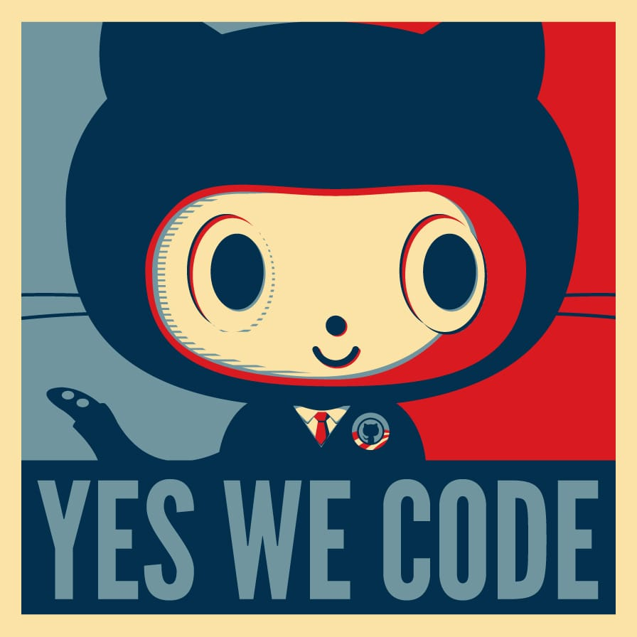
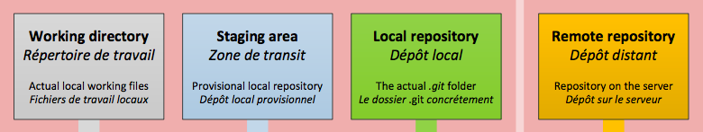
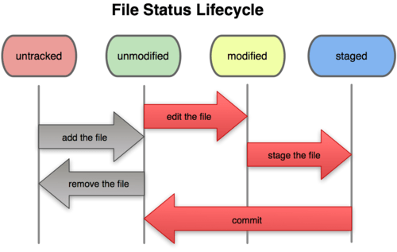
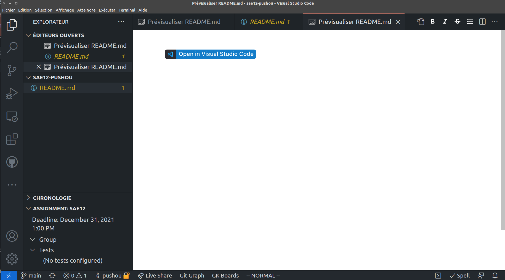
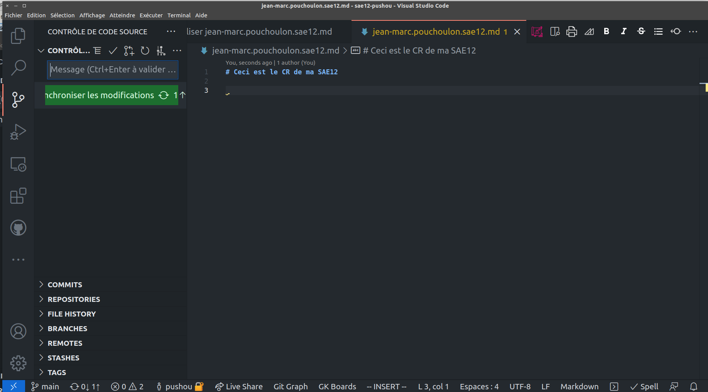
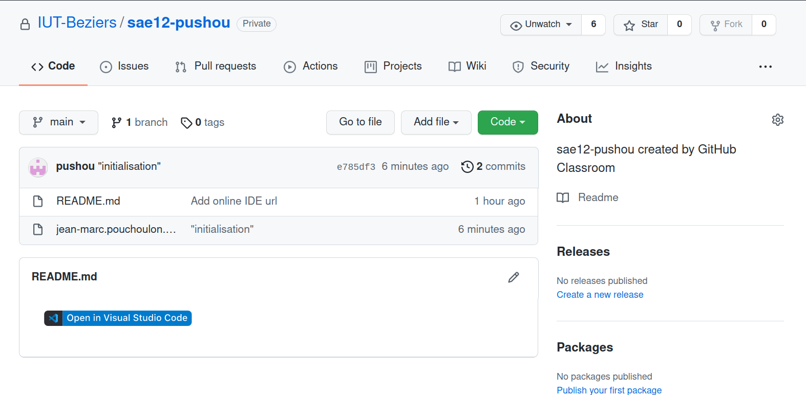

marp: true
theme: gaia
_class: lead
paginate: true
backgroundColor: #fff
color: black
header: "SAE12 - Réseaux"
backgroundImage: url(background-cable.jpg)
math: katex
allowed_elements: h1,h2,h3,h4
Git pour la SAE12
Git

Dans une entreprise il faut partager l'information.
Pour les développeurs on partage du code.
Pour les administrateurs systèmes et réseaux on va partager des scripts des configurations.
Pour vous afin de créer un compte rendu.
Fonctionnement de Git
Lors de chaque "commit" Git réalise des instantanés de l'état d'un système de fichiers texte. Les fichiers peuvent donc être votre compte-rendu de SAE au format Markdown.
Source git book http://git-scm.com/book/fr CC

Indexation des fichiers par Git
Pour dire à Git que tel fichier doit être suivi (indexé) on fait git add nom_du_fichier_ajouté
Source git book http://git-scm.com/book/fr CC

Les différentes aires de Git
Source git book http://git-scm.com/book/fr CC

Cycle de vie d'un fichier avec Git
Source git book http://git-scm.com/book/fr CC

En action
- Créez un compte sur GitHub (prénom.nom) et connectez-vous.
- Allez sur https://classroom.github.com/a/WsrJSKax pour initialisez votre repo

Création de votre compte rendu
Créer un fichier prenom.nom.sae12.md

Commit
Sauvegarder et "committez" le fichier dans le "contrôle de code source", puis synchroniser.

Résultat sur Github

Facultatif
Chantez discrètement une chanson " il est des nôtres il a committé sa SAE12 comme les autres"
feel good...